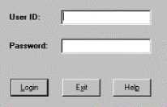
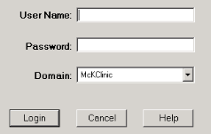
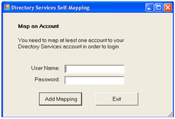
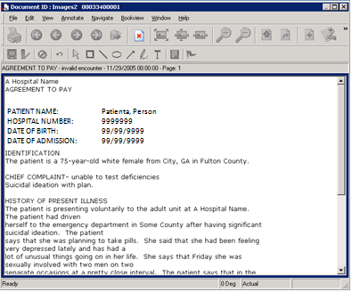

This section tells you how to start the utility.
Important:
Only one user at a time should execute ICU. Multiple concurrent users at the same facility may cause timeout errors
| 1. | Double-click the Index Correction Utility icon on your desktop. The system displays the Index Correction Utility login dialog box. |
 
Note: The Domain field lists all Windows domains that are trusted by the ProdName-here system and is blank for first-time login. For subsequent login, the Domain box displays the last domain that was specified.
Conditional - For Directory Services authentication only: If your Windows account is not currently mapped to your user ID and the self-mapping feature is enabled, the system displays the Directory Services Self-Mapping dialog box.

Enter your user name and password, and click Add Mapping to associate the two IDs.
Note: The system may display additional dialog boxes during login, depending on current conditions (for example, to map multiple user IDs). Follow on-screen instructions to continue.
After the system validates your logon credentials, the Index Correction Utility launches in ‘Expired Documents only’ view mode and displays information for the first expired document found in the CAB_HOLD table.
If Immediate View on the View menu in the ICU window is enabled, the system also launches the viewer and displays the document image that corresponds to the current document record. For example:

See other topics